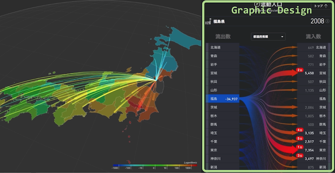

yuikita21@gmail.com | http://arcoyk.github.io/
Ph.D Candidate @ The University of Tokyo, Applied Computer Science (SV: Prof. Jun Rekimoto)
Education
The University of Tokyo, Tokyo, Japan (Apr 2014 - present)
Ph.D. Student, Applied Computer Science (SV: Prof. Jun Rekimoto)
The University of Tokyo, Tokyo, Japan (Apr 2012 - Mar 2014)
Master of Arts and Sciences, Applied Computer Science (SV: Prof. Jun Rekimoto)
Key Course: Human Interface, Network Industries, Applied Computer Science, Emerging Design and Informatics
Aoyamagakuin University, Kanagawa, Japan (Apr 2008 - Mar 2012)
Bacherlor of Engineering, Computer Science (SV: Prof. Minoru Harada)
Key Course: Algorithm, Programming, Computer Archtecture, Logic Circuits, Natual Language Processing
Working Experience
Sony Computer Science Laboratories, Research Assistant (Sept 2015 - present)
takram design engineering, designer (Apr 2014 - Mar 2015)
Exploratory Software Project, IPA MITOH, Chief Developer (Aug 2012 - Feb 2013)
Igarashi Design User Interface Project, JST ERATO, Research Assistant (Jun 2010 - Mar 2013)
Publications (Peer-reviewed International Conference)
1. Y.Kita and J.Rekimoto. Digitally Enhanced Utensils: Designing Time-sensitive Gustations.16th International Conference on Human-Computer Interaction 2014.
2. Y.Kita and J.Rekimoto. Thermal Visualization on Cooking. Proceedings of the 23rd International Conference on Artificial Reality and Telexistence (ICAT), Tokyo, Japan, 2013.
3. Y.Kita and J.Rekimoto. Spot-Light: Multimodal Projection Mapping on Food. 15th International Conference on Human-Computer Interaction 2013.
Awards and Grant
GOOD DESIGN GOLD AWARD (2015)
Outstanding Graduation Thesis, Aoyama Gakuin University (Mar 2012)
IPA MITOH (Aug 2012)
1st, U.S. Intern of Recruit Holdings, Inc. (Sept 2014)
Exhibitions and Invited Talks
National Museum of Emerging Science and Innovation (2011, Igarashi ERATO), CRISTAL (Table Interface for Home Devices)
The University of Tokyo (2012, iii Exhibition), CAPINNIT (Books that search images)
Maker Fair Tokyo (2014, Tokyo Big Sight)
Microsoft (2014, MITOH Conference), Wet Materials
Sony, STEF (2015)
Skills
Language: Japanese, English
Software: C/C++, Python, Java, Ruby, OpenCV, OpenGL, GLSL
Manufacturing: 3D Printing, Laser Cutter, motors, electronic sensing technologies, microcontroller programming and interface with hardware, and cameras
A113
Recent Work
(Contributed parts were highlighted)  RESAS (Launched by Ministry of Economy Trade and Industry):
This projects aims to visualize big data for Japanese economics. I was one of 5 members working for this project, mainly contributed GUI design and coding (Contributed parts were highlighted). We used C++ as basic language, Cinder as a GUI framework, and GLSL or WebView as additional libraries.
https://resas.go.jp/
2016 YuiKita